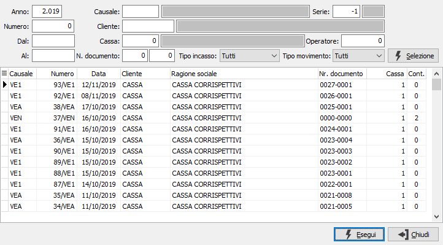
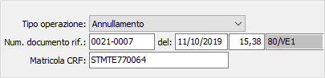
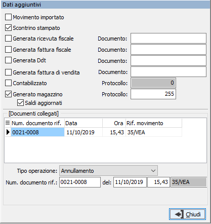
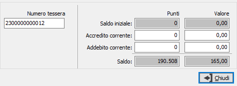
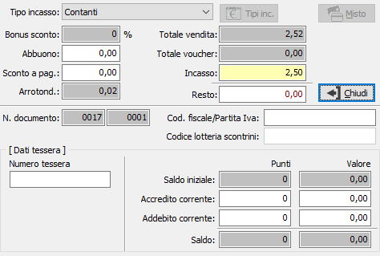
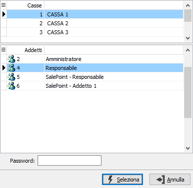

Introduzione
Il programma consente di inserire, visualizzare e stampare i movimenti
della vendita al dettaglio. Al momento del primo accesso al programma,
lo stesso si situa in modalità di attesa, salvo che in configurazione
non sia specificata la richiesta preventiva dell'addetto.
Il cursore si posiziona sul campo data. Su questo campo l’utente deve
definire il tipo di azione che intende compiere. In altre parole, deve
decidere se inserire nuovi movimenti, oppure visualizzare, o stampare
movimenti esistenti. L’azione da compiere può essere comandata tramite
la pressione di alcuni pulsanti della tool
bar o tramite l’uso dei corrispondenti tasti funzione.
Non è consentito effettuare variazioni di
movimenti già inseriti, salvo per alcune tipologie di movimenti.
La compilazione del movimento di vendita si compone di tre fasi principali:
Se gestito il "Documento commerciale" da configurazione, è
possibile inserire movimenti di reso/annullamento.
Ricerca e visualizzazione di un movimento
Cliccando due volte sul campo data o premendo il tasto funzione F9,
si apre la finestra video di Ricerca movimenti di vendita.

La finestra video di Ricerca movimenti di vendita presenta in primo
luogo il pannello di input costituito da alcuni campi per inserire “filtri”
o parametri di ricerca che consentono di limitare il numero di movimenti
da presentare a video.
E’ possibile infatti indicare l’anno a cui si riferiscono i movimenti
da individuare, oppure il codice (con possibilità di ricerca tramite lo
zoom F9) della causale di vendita da ricercare oppure il codice (con possibilità
di ricerca tramite lo zoom F9) del cliente a cui si riferiscono i movimenti
da ricercare, oppure il codice (con possibilità di ricerca tramite lo
zoom F9) della cassa a cui si riferiscono i movimenti da ricercare, oppure
le date di inizio e fine ricerca, il tipo di incasso, il tipo di movimento
(da contabilizzare, contabilizzato oppure tutti), o più parametri fra
quelli indicati. Conoscendolo, è possibile indicare la serie, il numero
di movimento oppure il numero del documento da ricercare nel formato ZZZZ-NNN
dove ZZZZ è il numero della chiusura e NNNN il numero dello scontrino.
Se non gestito il "Documento commerciale" da configurazione,
al posto del numero documento, sia come limite che come colonna, è presente
il numero scontrino.
Qualsiasi parametro si sia inserito, occorre attivare la selezione cliccando
sul bottone Selezione. Attivata la selezione, nella griglia della sezione
video inferiore vengono visualizzati tutti i movimenti esistenti coerenti
con i parametri di selezione inseriti. Utilizzando i tasti freccia
su o freccia giù, oppure
usando il mouse, ci si posiziona sul rigo relativo al movimento da trattare,
selezionandolo quando una delle celle di tale rigo viene evidenziata.
Cliccando quindi sul bottone Esegui o cliccando due volte sul rigo attivo,
viene visualizzato il movimento selezionato.
In visualizzazione sono attivi i seguenti pulsanti:
 Il
pulsante Informazioni, consente di visualizzare lo stato del movimento.
Compare la finestra mostrata a lato dove sono indicati i dati
relativi alla stampa dello scontrino, alla generazione di documenti,
magazzino e contabilità e l'indicazione di movimento importato. Il
pulsante Informazioni, consente di visualizzare lo stato del movimento.
Compare la finestra mostrata a lato dove sono indicati i dati
relativi alla stampa dello scontrino, alla generazione di documenti,
magazzino e contabilità e l'indicazione di movimento importato.
Se il movimento è collegato ad un altro movimenti per esempio
per annullamento, nella sezione Documenti collegati compare il
riferimento al movimento ed il tipo di operazione che è stata
effettuata sul movimento stesso; nel movimento di annullamento
o reso la sezione documenti collegati riporta il riferimento al
movimento che è stato annullato.
 |
 |
 Il
pulsante Tessera, se attiva la gestione delle tessere fedeltà,
consente di visualizzare i saldi della tessera su cui è stato
inserito il movimento. Compare la finestra mostrata a lato dove
sono indicati il codice della tessera, il saldo iniziale, l'accredito
o addebito relativi al movimento corrente ed il saldo effettivo
al momento. I dati della tessera possono essere espressi in punti
oppure in valore in base a come definito dalla tessera stessa. Il
pulsante Tessera, se attiva la gestione delle tessere fedeltà,
consente di visualizzare i saldi della tessera su cui è stato
inserito il movimento. Compare la finestra mostrata a lato dove
sono indicati il codice della tessera, il saldo iniziale, l'accredito
o addebito relativi al movimento corrente ed il saldo effettivo
al momento. I dati della tessera possono essere espressi in punti
oppure in valore in base a come definito dalla tessera stessa.
|
 |
Il
pulsante Totali visualizza il riepilogo dei totali della vendita
corrente. Vengono riportati il tipo di pagamento, gli eventuali
sconti, lo sconto a pagare, l'arrotondamento, il totale dello
scontrino, il totale dei voucher eventualmente utilizzato, l'importo
pagato e l'eventuale resto.
Vengono riportati anche il numero documento, il codice fiscale/partita
Iva ed il codice lotteria; il numero del documento è espresso
nel formato ZZZZ-NNN dove ZZZZ è il numero della chiusura e NNNN
il numero dello scontrino.
Se non è gestito il "Documento commerciale" da configurazione,
al posto del numero documento è presente il numero scontrino.
Nella parte bassa, se attiva la gestione delle tessere fedeltà,
viene riportata la situazione della tessera fedeltà analogamente
a quanto spiegato per il pulsante Tessera.
|
 |
Il
pulsante Addetti consente di selezionare, prima di iniziare un
movimento, l'addetto e la cassa su cui operare; il pulsante è
attivabile solo se si gestiscono più addetti e/o più casse.
Questa finestra viene visualizzata, solo se si gestiscono più
addetti e/o più casse, anche all'acceso della procedura.
|
 |